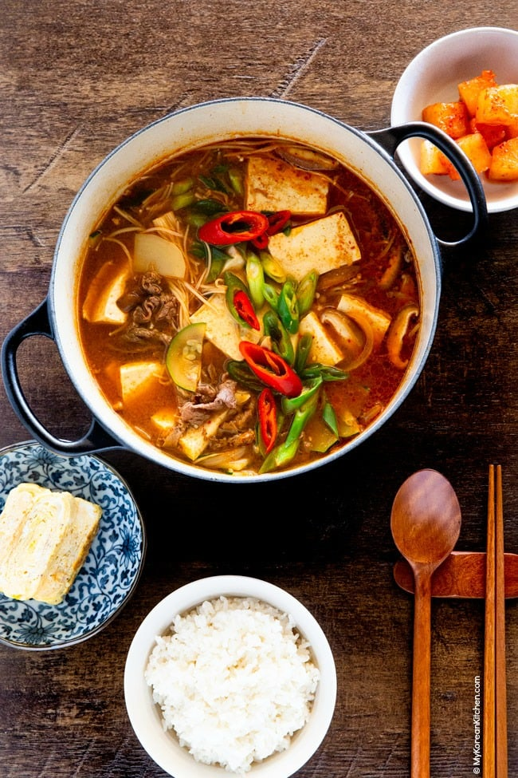

Doenjang

This is a very popular Korean soup with meat
A popular meat soup made with a lot of vegetables and a red sauce.
Sometimes it has a kimchi based broth to make it richer and with
a lot more of flavour
Ingredients
- Meat
- Kimchi
- Desired Vegetables
- Broth
Steps
- Make the broth with the kimchi as a base
- Add the meat and vegetables
- Put spices and let it cook for a few hours on
very low fire